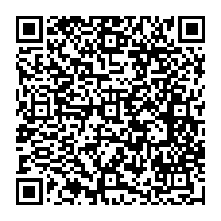
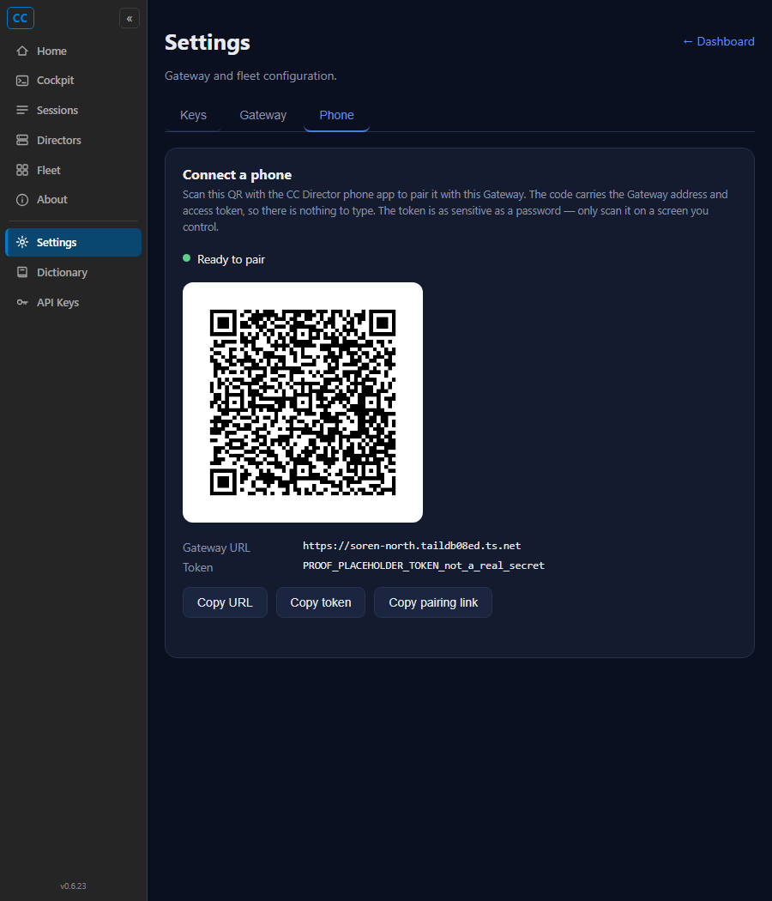

[Gateway] Encode Gateway URL + token, show on a Cockpit "Connect a phone" panel. Branch issue-385-pairing-qr.
src/CcDirector.Gateway/Util/PairingPayload.cs) - pure, unit-tested. Produces ccdirector://pair?u=<url>&t=<token> with both query values URL-encoded.src/CcDirector.Gateway/Api/GatewayPairingEndpoint.cs):
GET /pair/qr.png -> 200 image/png QR of the pairing link; 503 when the front door is unavailable.GET /pair/payload -> the raw url/token/payload as JSON for the panel's copy-able fallback.AuthMiddleware.HasValidToken; no new auth). Wired in GatewayEndpoints.Map.QRCoder 1.8.0 (PngByteQRCode, no System.Drawing dependency).src/CcDirector.Cockpit/wwwroot/pages/settings.html: renders the QR <img> plus the Gateway URL and token as copy-able text (Copy URL / Copy token / Copy pairing link).TailscaleIdentity.TryGetFrontDoorBaseUrl() returns null the endpoint returns a clear 503 naming the missing Tailscale front door - never a placeholder QR.Note on this report's values: the screenshot and standalone QR were generated against an isolated proof Gateway whose token was deliberately the non-secret string PROOF_PLACEHOLDER_TOKEN_not_a_real_secret (set via CC_DIRECTOR_ROOT), so no live bearer token is committed to this public repo. The byte-equality of the QR token against the real gateway-token.txt (criterion 2) was verified live separately and is recorded below with the real token value redacted.
The Cockpit Settings -> Phone tab, served through the Gateway front door, rendering the live QR plus the copy-able URL and token. GET /pair/qr.png returned HTTP/1.1 200 OK, Content-Type: image/png.
| Check | Result |
|---|---|
| GET /pair/qr.png status | 200 image/png |
| PNG magic bytes | 89 50 4E 47 (.PNG) - OK |
| Panel renders QR img | naturalWidth=488 (real image loaded) |
| Panel shows URL + token text | yes (+ 3 copy buttons) |


Run against the real production Gateway (real token). The QR PNG was decoded with OpenCV's QRCodeDetector and the decoded t compared byte-for-byte to %LOCALAPPDATA%\cc-director\config\director\gateway-token.txt:
DECODED: 'ccdirector://pair?u=https%3A%2F%2Fsoren-north.taildb08ed.ts.net&t=<REDACTED-43-char-token>' u (decoded): https://soren-north.taildb08ed.ts.net # == TailscaleIdentity.TryGetFrontDoorBaseUrl() t (decoded): <REDACTED> # == contents of gateway-token.txt TOKEN BYTE-EQUAL: True URL == front-door: True
Decoded payload is exactly ccdirector://pair?u=<front-door>&t=<token>; u = the live front-door URL; t = byte-for-byte equal to gateway-token.txt.
With the front-door URL forced null, GET /pair/qr.png returns a clear 503 JSON naming the missing Tailscale front door (captured live; identical message to the endpoint's FrontDoorMissing constant):
HTTP/1.1 503 Service Unavailable
Content-Type: application/json; charset=utf-8
{"error":"Tailscale front-door URL unavailable - this machine has no MagicDNS identity
(Tailscale not running or not logged in). The phone reaches the Gateway over the tailnet,
so pairing needs the front door. Start Tailscale and reload."}
No QR is emitted; the error names the missing front door. The unit tests Build_MissingGatewayUrl_Throws_NoPlaceholder and QrPng_returns_png_or_clear_503_naming_the_front_door lock this in.
dotnet build cc-director.sln -> Build succeeded. 0 Warning(s) 0 Error(s) (TreatWarningsAsErrors=true).
Passed PairingPayloadTests.Build_TypicalFrontDoorAndToken_ProducesExactSchemeAndEncodedQuery Passed PairingPayloadTests.Build_TokenWithReservedCharacters_EncodesThemSoTheQueryRoundTrips Passed PairingPayloadTests.Build_UrlAndToken_BothDecodeBackToTheOriginalValues Passed PairingPayloadTests.Build_MissingGatewayUrl_Throws_NoPlaceholder(url: "") Passed PairingPayloadTests.Build_MissingGatewayUrl_Throws_NoPlaceholder(url: null) Passed PairingPayloadTests.Build_MissingGatewayUrl_Throws_NoPlaceholder(url: " ") Passed PairingPayloadTests.Build_MissingToken_Throws(token: null) Passed PairingPayloadTests.Build_MissingToken_Throws(token: "") Passed PairingPayloadTests.Build_MissingToken_Throws(token: " ") Passed PairingEndpointTests.QrPng_without_token_returns_401 Passed PairingEndpointTests.Payload_without_token_returns_401 Passed PairingEndpointTests.QrPng_returns_png_or_clear_503_naming_the_front_door Passed PairingEndpointTests.Payload_returns_the_builder_contract_or_clear_503 Passed! - Failed: 0, Passed: 13, Skipped: 0, Total: 13
No drift. The change adds a Gateway endpoint that reuses the existing token auth (GatewayAuth / AuthMiddleware) and the existing front-door resolver (TailscaleIdentity). No new trust boundary, no new secret storage, no container-model change. architecture_manifest.yaml (last_updated 2026-06-12) and security_profile.yaml (last_verified 2026-06-09, within the 30-day threshold) remain current.
All five acceptance criteria are met with live proof and passing tests. I believe this is finished.